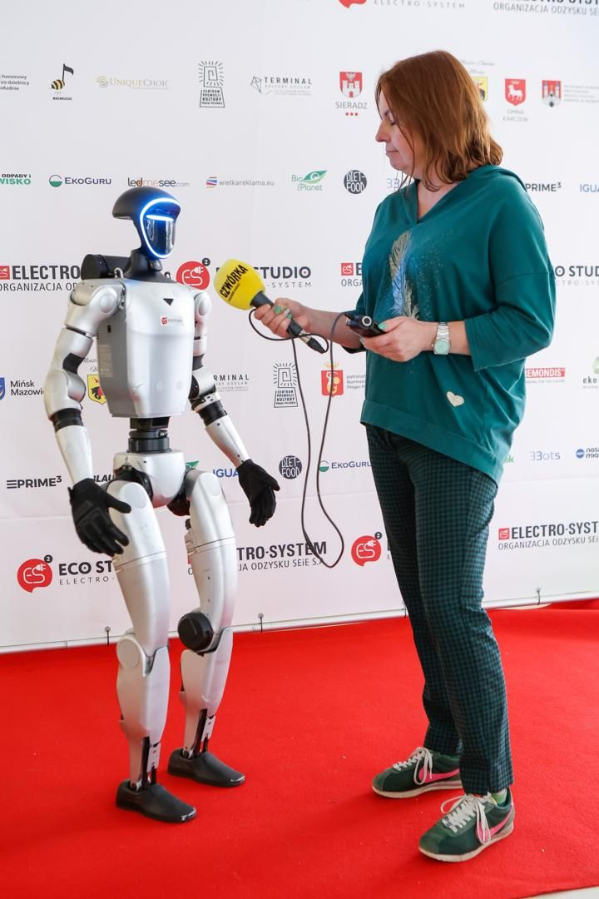
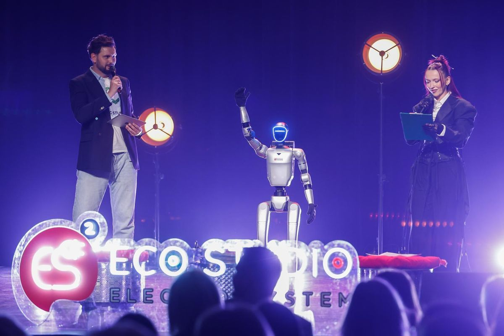

- Strona główna
- Blog
- 9 lekcji z eventów z robotem
Z praktyki · Realizacje
Dziewięć lekcji z kilkudziesięciu wydarzeń z robotem humanoidalnym
Od balu w drezdeńskim pałacu, przez targi MSPO w Kielcach i wieczór w Centrum Nauki Kopernik, po paradę gminną i wesele. Zebraliśmy to, co powtarza się na kolejnych wydarzeniach — i co decyduje o tym, czy robot zostanie zapamiętany, czy tylko zauważony.

Robot humanoidalny na evencie to nie tylko sprzęt. Ten sam model może stać w kącie jako dekoracja albo być punktem, o którym goście mówią po wydarzeniu. Różnicę robi przygotowanie — a to, jak się przygotować, wiemy z praktyki: z gal, targów, konferencji, pikników i prywatnych przyjęć w pięciu krajach.
Poniżej dziewięć rzeczy, które powtarzają się na kolejnych realizacjach. Każdą opisujemy na przykładzie konkretnego wydarzenia.
1. Robot potrzebuje roli, nie miejsca w kącie
Najsłabiej działa robot, który „po prostu jest”. Najlepiej — robot, który ma w programie konkretne zadanie. Na targach MSPO robot Grupy Rekord był ambasadorem wszystkich spółek grupy: przedstawiał je po kolei i kierował rozmowę tam, gdzie akurat była potrzebna. Na Długim Targu w Gdańsku robot w koszulce LEX AI był symbolem aplikacji — witał przechodniów, podawał rękę i odpowiadał na pytania.
Rola nie musi być skomplikowana. Wystarczy odpowiedź na pytanie: co robot ma zrobić, czego bez niego by nie było?
2. Najlepsze miejsce to tam, gdzie ludzie i tak się zatrzymują
W Centrum Nauki Kopernik, podczas wieczoru „O czym śnią roboty”, robot stał przy Fontannie powietrznej — jednym z najbardziej obleganych eksponatów. Nie musiał nikogo przyciągać z daleka, bo ludzie już tam byli. Na MSPO pracował przy korytarzu, którym przechodzili zwiedzający, i zapraszał ich na pokaz na stoisku.
Wejście, ścianka, scena, główne przejście — to zwykle lepsze miejsca niż wydzielony kąt, do którego trzeba specjalnie iść.
3. Publiczność decyduje o tym, jak wygląda rozmowa
Dorośli w Koperniku pytali przede wszystkim o technologię i o to, jak robot działa — a mniej o to, czy się przewróci, co zwykle ciekawi szkolne wycieczki. Uczestnicy konferencji branżowej zapytają o jeszcze inne rzeczy. Dlatego przed każdym wydarzeniem ustalamy charakter robota i wgrywamy mu wiedzę o konkretnej publiczności, agendzie i firmie.
Robot, który zna nazwisko prelegenta i godzinę następnej sesji, robi zupełnie inne wrażenie niż robot, który zna tylko ogólniki.
4. Telefony wyciągają się same — zaplanuj kadry
Na Women in Tech Summit strefa z robotem należała do najczęściej fotografowanych miejsc wydarzenia. Na konferencji WallStreet 30 uczestnicy sami nagrywali robota, a nagrania rozeszły się po social mediach. To powtarza się na niemal każdej realizacji.
Skoro goście i tak będą nagrywać, warto zaplanować, co znajdzie się w kadrze: robot przy ściance z logo, wejście na scenę, krótki taniec, powitanie VIP-a. Na finale Eco Studio przy ściance sponsorów nagrano z robotem wywiad — z logotypami partnerów w tle.


5. Branding zamienia robota w nośnik marki
Robot w koszulce klubu YEAH GYM, w barwach Grupy Rekord, w firmowej czerwieni Gonia Auto, przy materiałach inwestycji Silver Garden na stoisku Matys Development. Logo i kod QR na klatce piersiowej sprawiają, że marka jest w każdym zdjęciu i nagraniu, które zrobią goście.
Na gali branding może być całą oprawą: na Drezdeńskiej Nocy Zamków robot pracował w cekinowym smokingu i koronie. Branding jest u nas w cenie, bo bez niego robot traci połowę swojej wartości dla firmy.
6. Plener i zmrok nie są przeszkodą
W Ogrodzie Dendrologicznym w Przelewicach, podczas Nocy Bajek Pokolenia, robot pracował po zmroku przy Mauzoleum, w świetle reflektorów ustawionych na arkadach. Na Paradzie Jednorożców szedł w koszulce gminy wśród uczestników, w plenerze do zmroku. Przed salonem Gonia Auto pracował w deszczu, pod parasolem.
Wieczór w plenerze ma jedną zaletę: podświetlony robot wygląda na zdjęciach lepiej niż w dzień.


7. Media lubią roboty — ale niczego nie obiecujemy
Materiał z robotem LEX AI pokazał Teleexpress, a TVP Gdańsk zrobiła o aplikacji reportaż. Finał Eco Studio relacjonowała ekipa „Pytania na śniadanie” TVP2, a robot jest w tej relacji na ekranie. Robot humanoidalny to temat, który dobrze wygląda w kadrze, więc zwiększa szansę na relację.
Ale zasięgów w telewizji nie da się zagwarantować i nie robimy tego w ofercie. Pewne jest to, co zostanie w telefonach gości.
8. Operator jest częścią występu
Przez cały event przy robocie jest certyfikowany operator. Odpowiada za konfigurację, obsługę i bezpieczeństwo, pilnuje kolejki do zdjęć i wymienia baterie, więc pokaz nie zatrzymuje się na ładowanie. Robot korzysta z LiDAR-u i wizji komputerowej, żeby omijać ludzi i przeszkody, a każda realizacja jest objęta ubezpieczeniem OC.
Dla organizatora oznacza to jedno: nie musisz zajmować się niczym technicznym.
9. Krótko też działa — jeśli trafisz we właściwy moment
W Koperniku robot pracował trzy godziny, od 19:00 do 22:00 — dokładnie tyle, ile trwał wieczór. Na otwarciu, gali czy przy wręczeniu nagród często wystarczy kilka godzin w najważniejszej części programu. Na targach odwrotnie: goście przychodzą falami, więc robot zwykle pracuje cały dzień, a przy kilku dniach targów każdy dzień jest tańszy o 15%.
Co z tego wynika dla Twojego wydarzenia
Zanim napiszesz do nas lub do kogokolwiek innego, odpowiedz sobie na pięć pytań. Na ich podstawie przygotujemy scenariusz i wycenę:
- Jaką rolę ma robot — ambasador marki, konferansjer, gwiazda wieczoru, przewodnik?
- Kim są goście i w jakim języku mówią?
- Gdzie ludzie i tak się zatrzymują — wejście, ścianka, scena, korytarz?
- Które momenty programu mają zostać na zdjęciach?
- Ile godzin naprawdę potrzebujesz — cały dzień czy najważniejsza część programu?
Najczęstsze pytania
To zależy od roli. Na targach i konferencjach najczęściej cały dzień, bo goście przychodzą falami. Na gali czy otwarciu wystarczy często kilka godzin w najważniejszej części programu — taki format wyceniamy indywidualnie i zawsze taniej niż pełny dzień.
Tak. Robot korzysta z LiDAR-u i wizji komputerowej, żeby omijać ludzi i przeszkody, a przez cały czas czuwa nad nim certyfikowany operator. Przy wydarzeniach na kilkanaście tysięcy osób wydzielamy strefę pokazową, a operator pilnuje kolejki do zdjęć.
Nie — relacji w mediach nie da się zagwarantować. Możemy powiedzieć tyle, że robot zwiększa szansę: realizacje z naszym robotem pokazywały Teleexpress, „Pytanie na śniadanie” TVP2 i TVP Gdańsk.